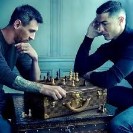

Lionel Messi and Cristiano Ronaldo are often regarded as two of the greatest footballers of all time,
each with a unique style and extraordinary skill set.
Messi is celebrated for his incredible dribbling ability, vision, and playmaking, often creating opportunities
for his teammates. In contrast, Ronaldo is known for his remarkable athleticism, powerful shots, and goal-scoring
prowess, making him a prolific scorer throughout his career. Their rivalry has captivated fans worldwide,
with each player breaking numerous records and achieving unparalleled success in the sport.

The rivalry between Lionel Messi and Cristiano Ronaldo has defined an era of football, captivating fans
and analysts alike. Both players have consistently pushed each other to new heights, with Messi's unparalleled
dribbling and playmaking contrasting Ronaldo's incredible athleticism and goal-scoring ability. Their competition
has sparked countless debates over who is the greatest, with each achieving numerous records, including Ballon
d'Or awards and club championships. Beyond their individual brilliance, their rivalry has also elevated the clubs
they represent, with legendary encounters in La Liga, the Champions League, and international tournaments. This
dynamic has not only shaped their careers but has also left an indelible mark on the sport itself.